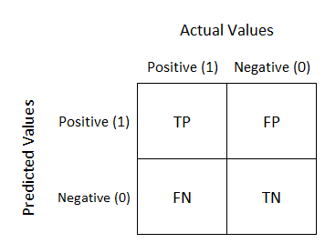

02-Ethics (Bias)
Contents
02-Ethics (Bias)#
import seaborn as sns
import numpy as np
import pandas as pd
import matplotlib.pyplot as plt
%matplotlib inline
%config InlineBackend.figure_format = 'retina' # makes figs nicer!
/opt/anaconda3/lib/python3.9/site-packages/scipy/__init__.py:146: UserWarning: A NumPy version >=1.16.5 and <1.23.0 is required for this version of SciPy (detected version 1.23.1
warnings.warn(f"A NumPy version >={np_minversion} and <{np_maxversion}"
Announcements#
Lab 1 now available early on DataHub (but not due until next Friday).
Goals of this lecture#
Case Study 1: How machine learning can perpetuate inequality.
What is ethics and why does it matter for CSS?
Bias in action: where does it come from?
Exploring fairness.
Case Study 1: How machine learning can perpetuate inequality in the court system#
The court system involves life-altering decisions#
In the USA, judges make life-altering decisions about defendants:
These decisions are often biased and can perpetuate racial inequality.
More recently, some researchers and companies have offered a “solution”: risk scores.
How risk scores work#
A risk score is a number (usually assigned by a statistical model) that estimates the likelihood that someone will commit another crime.
These models take various factors as input, including:
The defendant’s age.
The defendant’s history of misconduct.
As output, they produce a score, i.e., the probability of re-offending.
The problem(s) with risk scores#
Problem 1: They’re often not very accurate.
The score proved remarkably unreliable in forecasting violent crime: Only 20 percent of the people predicted to commit violent crimes actually went on to do so.
Problem 2: The way in which they’re inaccurate is racially biased.
In forecasting who would re-offend, the algorithm made mistakes with black and white defendants at roughly the same rate but in very different ways.
Brief detour: types of errors#
When running a test (e.g., a COVID test), you can make two kinds of errors:
A false negative (FN) is when you have COVID but the test says you don’t.
A false positive (FP) is when you don’t have COVID but the test says you do.

Check-in#
How would these kinds of errors map onto the risk score case we’ve been discussing?
Error types and risk scores#
In the case of risk scores:
A false negative = predicting that someone won’t reoffend, but they do.
A false positive = predicting that someone will reoffend, but they don’t.
Which kind of error do you think is worse?
Racial bias in error types#
Overall prediction accuracy was similar across race, but not the type of error:

Risk scores can perpetuate racial injustice#
Risk scores are racially biased in the types of errors they make.
This is unjust: it means that decisions about sentencing and bail could also be racially biased.
But if it’s illegal to discriminate on the basis of race, how are these risk scores allowed?
Problem 1: Proxy discrimination#
Risk assessment models usually don’t explicitly include race as a factor.
Instead, they include correlates of race (such as ZIP code).
This is called redundant encoding or proxy discrimination.
Because of historical racial injustices, these correlates are also correlated with reoffense.
Now populations that have historically been disproportionately targeted by law enforcement—especially low-income and minority communities—are at risk of being slapped with high recidivism scores. As a result, the algorithm could amplify and perpetuate embedded biases and generate even more bias-tainted data to feed a vicious cycle.
Problem 2: Opaque models#
This software is also typically proprietary, so we don’t know exactly what goes into the models.
This makes it near-impossible to “cross-examine” a model.
Violation of procedural due process?
Summing up#
Human judges are subject to bias (including racial bias).
Risk scores are an attempt to make this process “objective”.
Yet many models are opaque, potentially violating due process.
Despite equivalent predictive accuracy across race, many exhibit racial bias in which types of errors they make.
The use of these models thus entrenches pre-existing biases.
Addressing these issues requires discussing of our values––this is where ethics comes in.
What is ethics?#
The term “ethics” can refer to:
A philosophical discipline concerned with what is right and what is wrong.
Many ethical theories: virtue ethics, consequentialism, deontology and more.
Any given system of ethical values, i.e., the result of reasoning about what’s right and wrong.
“Applied ethics” involves ethics in the “real world”.
Bioethics, business ethics, machine ethics, and more.
Here at UCSD, we have the Institute for Practical Ethics, which includes research on ethics for Data Science.
Why ethics for CSS?#
Reason 1: CSS has impact#
In CSS, our work can have real-world impact.
Is this impact positive?
Does this work have the potential to cause harm?
How does the potential harm compare to current harms?
Reason 2: CSS involves hard decisions#
We also face many difficult questions.
Does this work perpetuate bias? What exactly is fairness? (Today)
Does this work violate privacy or have harmful potential for dual use? (Next lecture)
Am I conducting my data analysis honestly and fairly? (Throughout course + week 10)
How should I treat missing data?
Is my sample representative?
Why we start with ethics#
Throughout this course, we’ll learn about:
Acquiring and representing types of data.
Analyzing and interpreting data.
Building predictive models of data.
Each of these processes involves decisions.
Ethics should be at the forefront of our minds while making these decisions––not an after-thought.
Bias in Action#
When the past is biased#
When making predictions, we often rely on information about the past to predict the future.
Risk scores: will this person re-offend?
Hiring: will this person be a successful employee?
Loans: will this person pay back their debt?
But what happens when the past is biased?
Racial bias in recidivism predictions#
Overall prediction accuracy was similar across race, but not the type of error:
Gender bias in hiring#
Problem: Hiring talented people is hard; we also know that interviewers are subject to bias.
“Solution”: Can we automate this with a resume screening tool?
Look at past and current employees.
Which features of their resume are predictive of their hiring/success?
Any potential issues with this?
Hiring is already biased––using current data to inform future hiring will just entrench that bias.
Check-in#
What about if we explicitly removed features like self-identified gender from a model? Could such a model still be gender-biased?
Class and racial bias in lending#
Assessing credit risk is important:
The correct estimation of credit risk is paramount for the entire system. Failing in the credit risk estimation can lead to systemic failures such as the sub-prime crisis of 2008.
Hard to determine the right threshold for acceptable risk:
Overly lenient thresholds can lead to defaults and trap borrowers in debt.
Overly strict thresholds can lock out potential borrowers from building wealth.
Bias in risk assessment#
Historically, lending practices were overtly racist, e.g., redlining.
Various laws passed (e.g., Fair Housing Act of 1968) to protect potential borrowers from discrimination on the basis of race, religion, and more.
But these practices have left lasting inequities in credit scores like FICO.
If FICO were invented today, would it satisfy a disparate impact test? The conclusion of Rice and Swesnik in their law review article was clear: “Our current credit-scoring systems have a disparate impact on people and communities of color.”
So where does bias come from?#
Unrepresentative data#
Unrepresentative samples are very common with image recognition datasets (Buolamwini & Gebru, 2018), leading to disparate outcomes:
Microsoft and IBM classifiers perform best on lighter male faces (error rates of 0.0% and 0.3% respectively)…All classifiers perform worst on darker female faces (20.8% − 34.7% error rate).
Likely due to historic under-representation in data: Garbage in, garbage out.

Proxy discrimination#
Explicit discrimination on the basis of protected attributes (e.g., race, religion) is illegal.
But these attributes often correlate with other features or “proxies” (e.g., ZIP code, income).
Thus, ignoring protected attributes can just make the bias less visible:
AIs armed with big data are inherently structured to engage in proxy discrimination whenever they are deprived of information about membership in a legally suspect class whose predictive power cannot be measured more directly by non-suspect data available to the AI.
What makes an algorithm “fair”?#
Definition 1: No explicit discrimination?#
A naïve approach might require that the algorithm should ignore all protected attributes such as race, color, religion, gender, disability, or family status.
Potential issues?
Disdavantages#
Can still result in discrimination because of proxies.
Especially problematic with large datasets––can simply make discrimination less visible.
Simply denying AIs access to the most intuitive proxies for such predictive but suspect characteristics does little to thwart this process; instead it simply causes AIs to locate less intuitive proxies.
Definition 2: Predictive parity?#
Predictive parity meas that an algorithm’s predictions are equally accurate across relevant groups. I.e., the overall error rate is the same.
E.g., suppose that risk scores are equally accurate on average for men and women.
Potential issues?
Disadvantages#
Predictions can still be inaccurate in different ways, e.g., different rates of false positives.
Visual comparison#
error_rate = [50, 50]
fp = [30, 70]
fn = [70, 30]
groups = ['Group 1', 'Group 2']
fig, axes = plt.subplots(1, 3, sharey = True)
plt.ylim(0, 100)
axes[0].bar(groups, error_rate)
axes[1].bar(groups, fp)
axes[1].axhline(y = 50, linestyle = "dotted")
axes[2].bar(groups, fn)
axes[2].axhline(y = 50, linestyle = "dotted")
axes[0].set_ylabel("Error Rate (%)")
axes[1].set_ylabel("False Positives (%)")
axes[2].set_ylabel("False Negatives (%)")
axes[0].set_title("Error Rate (%)")
axes[1].set_title("False Positives (%)")
axes[2].set_title("False Negatives (%)")
fig.tight_layout()
Definition 3: Demographic parity#
Demographic parity requires that a decision—such as accepting or denying a loan application—be independent of the protected attribute…In other words, membership in a protected class should have no correlation with the decision.
Potential issues?
Equivalent predicted scores across groups#
score_parity = [75, 75, 75]
groups = ['Group 1', 'Group 2', 'Group 3']
plt.bar(groups, score_parity)
plt.ylabel("Predicted P(Default)")
plt.title("Demographic Parity")
Text(0.5, 1.0, 'Demographic Parity')
Disadvantages#
What if the base rates are different?
E.g., suppose men are more likely than women to default on a loan (Not necessarily true––just for the sake of illustration!).
true_probability = [60, 65, 90]
groups = ['Group 1', 'Group 2', 'Group 3']
plt.bar(groups, true_probability)
plt.ylabel("True P(Default)")
plt.title("Different True P(Default) Across Groups")
Text(0.5, 1.0, 'Different True P(Default) Across Groups')
If base rates are different across groups, demographic parity can lead to different accuracy across groups.
Predicted \(\%\) overestimates true \(\%\) for
Group 1andGroup 2.Prediction \(\%\) underestimates true \(\%\) for
Group 3.
scores = [75, 75, 75, 60, 65, 90]
groups = ['Group 1', 'Group 2', 'Group 3','Group 1', 'Group 2', 'Group 3']
label = ["Predicted %", "Predicted %", "Predicted %", "True %", "True %", "True %"]
df_scores = pd.DataFrame({"Score": scores,
"Label": label,
"Group": groups})
sns.barplot(data = df_scores, x = 'Group',
y = 'Score', hue = 'Label')
plt.legend(bbox_to_anchor=(1.02, 1), loc='upper left', borderaxespad=0)
plt.title("Demographic parity != Predictive Parity")
Text(0.5, 1.0, 'Demographic parity != Predictive Parity')
Disadvantages#
What if the base rates are different?
E.g., suppose men are more likely than women to default on a loan (Not necessarily true––just for the sake of illustration!).
In this case, we can’t have both predictive parity and demographic parity.
Counterpoint: if certain differences exist because of historical/ongoing biases (e.g., redlining, racial discrimination in the court system, etc.), perhaps we should correct for them in the model?
What’s fair?#
Different notions of fairness cannot always be implemented simultaneously.
This is especially true when society contains pre-existing biases.
Decisions often involve trade-offs.
What seems most fair to you?
Ignoring protected attributes: group identity not considered in model.
Predictive parity: same accuracy rates across groups.
Demographic parity: same prediction rates across groups.
Other resources#
This lecture has really only scratched the surface of issues in bias and fairness.
In recent years, many excellent books have been published relating to this topic:
Conclusion#
As noted, this lecture is just an introduction. But hopefully you now have the conceptual tools to:
Explain how and why bias can arise in “data-driven” predictive models.
Compare different approaches towards correcting this bias.
Describe the challenges involved in building “fair” data-driven models.